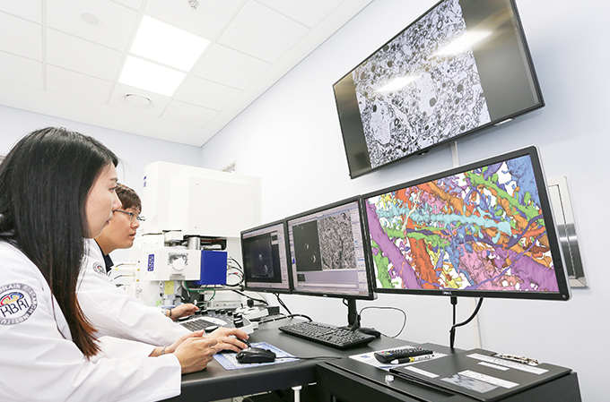
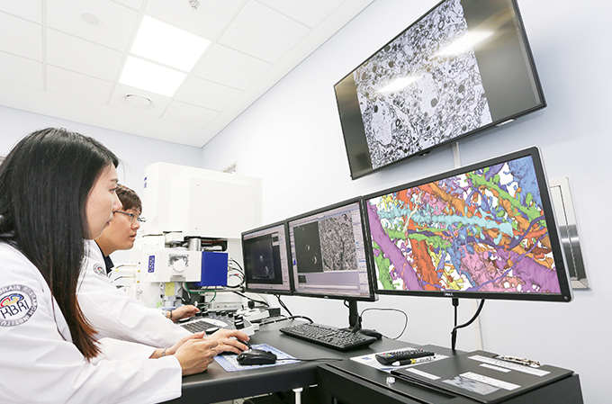
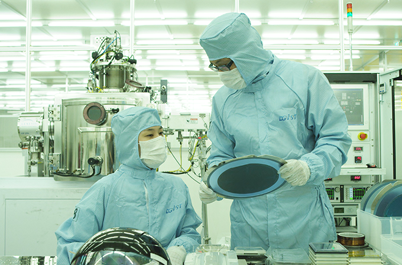
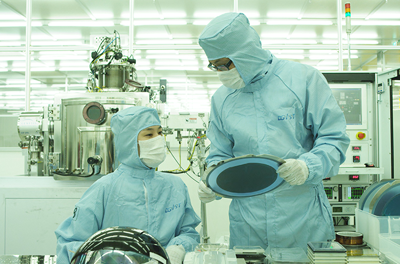

豊富な高級人材を輩出する教育都市
- Home
- 投資メリット
- 投資メリット
- 豊富な高級人材を輩出する教育都市
豊富な高級人材を輩出する教育都市
- 大邱圏の53の大学から年間７万人の高度な人材を輩出し、安定した人材の需給調整が可能（工科大卒業者：年間1万7000人輩出）
- 外国人向けの大邱国際学校の設立（580人規模）：イシアポリス（2010年8月開校）
- DGIST(ITㆍBTㆍNTㆍMT)、慶北大学校（電子・電気・モバイル）、嶺南大学校（機械・繊維）、啓明大学校（自動車・生物）、大邱大学校（漢方）など大学の特性化
- 約600人の工科大学の教授で構成された35ヶ所のR&Dセンターを保有し、企業との協力体制を構築（研究人材：4800人）
- 産・学協力によるカスタマイズド人材育成（サムスン電子は２０１１年に慶北大学にモバイル工学科を設置）
- 首都圏に比べて70%安い人件費、低い転職率（平均2.04%、2007年基準）

 

 
